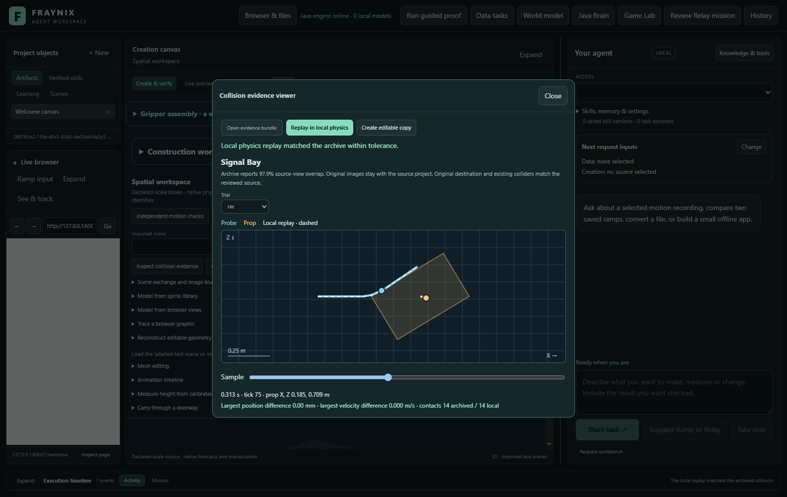
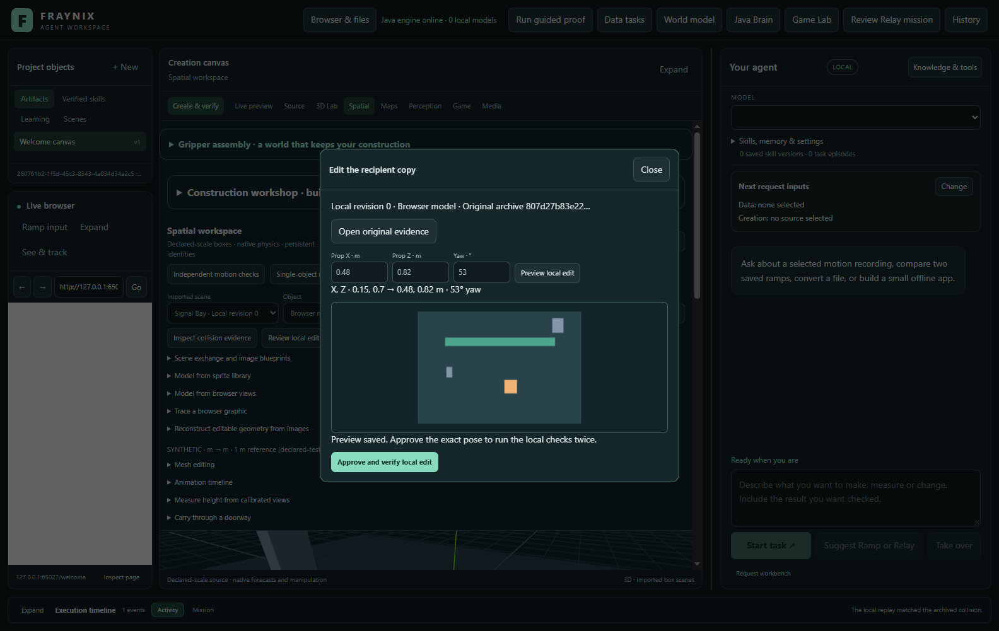
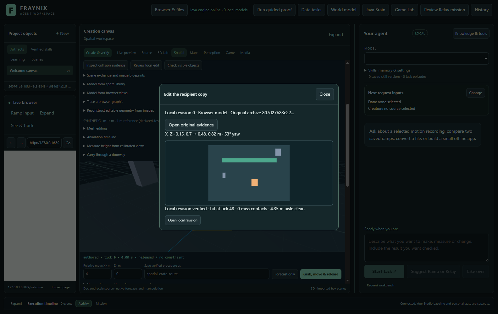

Edit a verified recipient copy
Branch a replayed authored level and require fresh approval and native verification for each new pose.
The first edited pose hit at tick 48, reached 63 contact ticks, missed cleanly in the control, and preserved the 4.35 m aisle. A separate approved second edit also passed.

A verified replay offers an explicit editable copy

The exact requested pose and protected aisle

The new local result after independent verification
System files
Open source